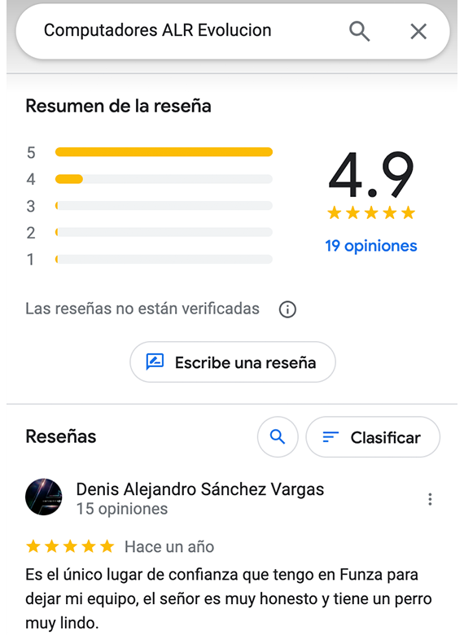

Servicio de Mantenimiento
de Computadores en Funza
Revisión Gratuita
¿Necesitas ayuda con tu computadora?
¡Estamos aquí para ayudarte! Chatea con nosotros
en WhatsApp con un clic.
¿Listo para experimentar la excelencia en mantenimiento de computadoras?
¡Descubre la calidad que nos distingue! Nuestras calificaciones en Google hablan por sí mismas. Cada testimonio positivo nos motiva a superar tus expectativas.
